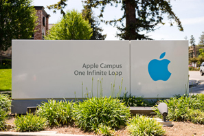
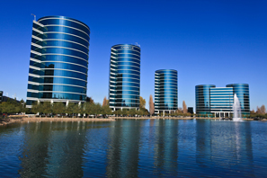

Silicon Valley, CA
 "The Bay Area is so beautiful, I hesitate to preach about Heaven while I'm here."
Silicon Valley is the undisputed leader in technology and innovation in the world. More future defining companies have been born here than anywhere else in the world, including Apple, Intel, Google, Facebook, and many more. The Bay Area has a rich history that goes as far back as the origins of radio, the use of radar in the World Wars, and continues into the digital age. Many of the defining technologies of the 20th and 21st century have emerged from Silicon Valley, including the personal computer, the internet, social networking, and the smartphone. These technologies are continuing to change almost every aspect of our lives.
Many regions around the world have tried to replicate the dynamics of Silicon Valley, but it has proved difficult to do. This ecosystem is the unique product of a startup friendly business environment, availability of venture capital, the influence of leading academic institutions (including UC Berkeley and Stanford), and a healthy economy, all within the context of opportunity for great personal reward and a chance to change the world.
Unbeknownst to many, Silicon Valley is actually at the beginning of an even larger wave of innovation as new industries like robotics, artificial intelligence, synthetic biology, 3D printing, and nanotechnology grow exponentially in size. The Bay Area is positioned to retain its title as the center for innovation as it seeks to tackle the challenges of the new world that it has played a tremendous role in shaping.
The Valley also has an incredibly diverse population of talented people who have come from all over the world to pursue their dream of finding both fulfilling work and financial success. This makes networking in Silicon Valley a unique experience that will expose you to more interesting ideas than you would ever imagine could come from one place.
Finally, California is known for its scenic beauty and perfect weather, and every visitor falls in love with the sunny and balmy climate of the Bay Area. San Francisco is a short way away, as are the enchanting and world famous wine regions of NAPA and Sonoma Valley. In the Bay Area, the beach is never more than an hour away, nor are the scenic hills and mountains. Breathtaking Yosemite National Park is close by as well, making this one of the most naturally beautiful places to visit.